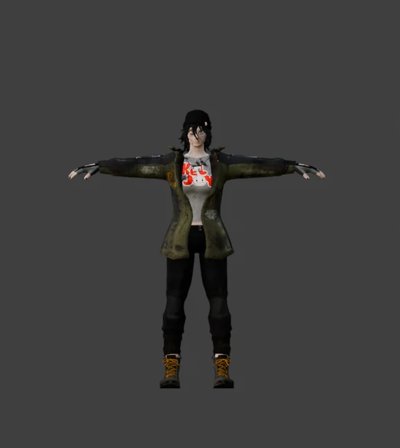
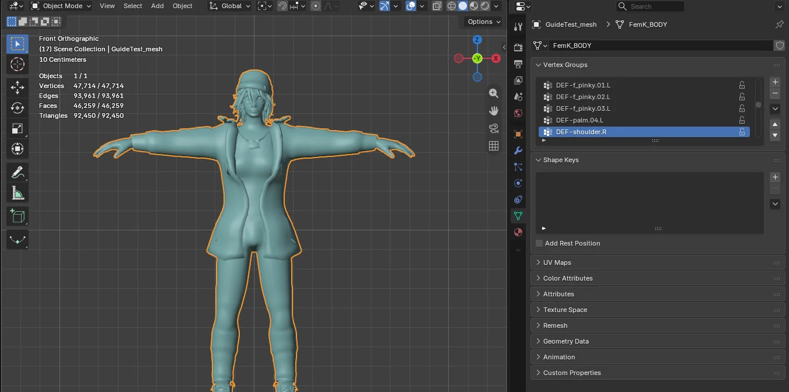
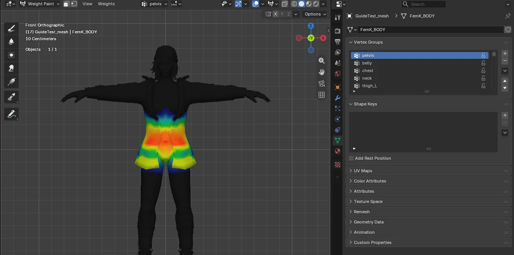
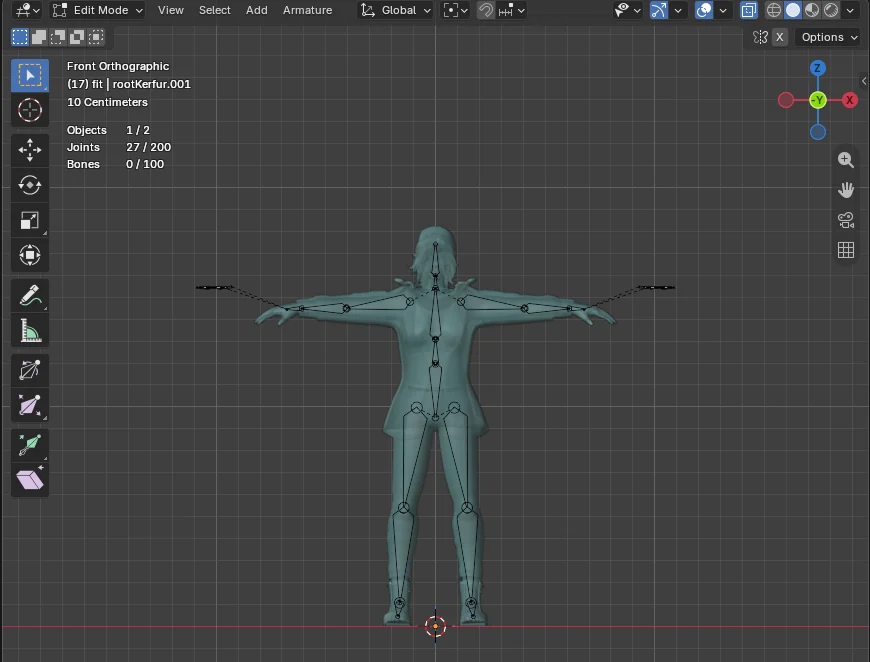
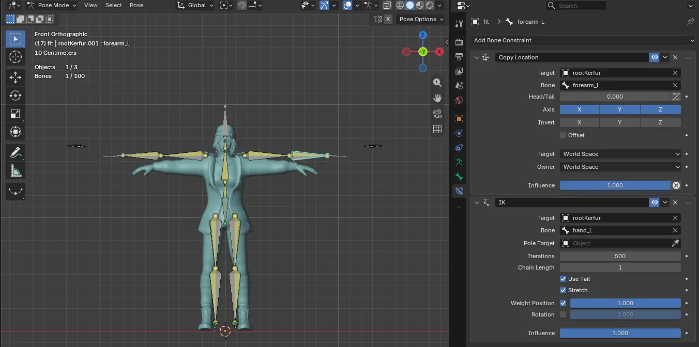
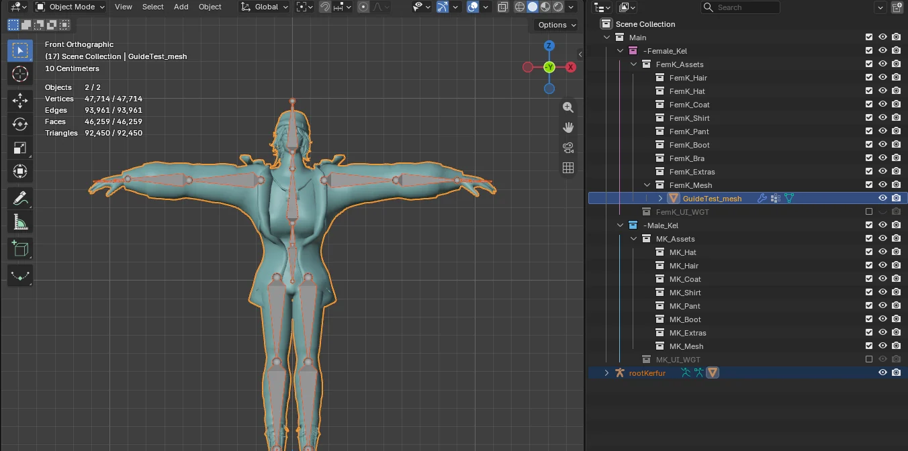
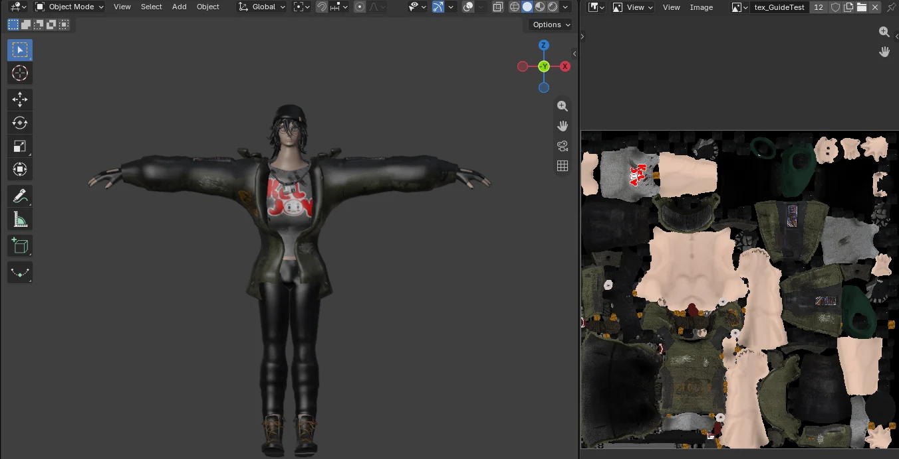
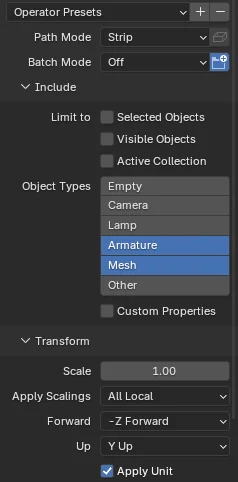

Making Skins - Full Guide
by forder. A player skin for Multivoid, the Voices of the Void multiplayer mod, made by hand from a Blender model.
This is the route I use for skin commissions, done by hand with free tools. I walked a test model through every step below and checked the finished pak against Multivoid's own skins. Where something can only be checked in game, I say so.
Tested with Blender 5.2, Unreal Engine 4.27.2, repak 0.2.3, Multivoid 0.9.208 and unreal_shimloader 1.1.7. Multivoid 0.9.292 came out after that and loads skins the same way: same asset paths, same name rules, same folders. Other versions may have menus in different places.
Overview
A Multivoid skin is one .pak file with four files in it: a skeletal mesh and a texture, each cooked by Unreal Engine 4.27. The mesh has to use Kel's skeleton, because the game plays Kel's animations on it. So most of the work is in Blender, making your model fit that skeleton.
- Blender fit the model to Kel's skeleton, bake one texture → FBX + PNG
- Unreal 4.27 import, set slots, cook → 4 cooked files
- repak pack the cooked files → MySkin.pak
- Multivoid pak + tile in a mod folder → F1 → Skins
In the end your model sits on Kel's joints, so it has Kel's proportions. Arms, legs and neck get Kel's lengths. Faces, hair, clothes and the overall look stay yours.
Use models you're allowed to use
Only use a model you made yourself or one whose license lets you modify and redistribute it. Read the license on the page you got it from. If you publish the skin, credit the model's author by name and link back to where the model came from. When in doubt, ask the author first.
Pick a skin name
The skin's name is the pak's file name. It also ends up in three other file names, so pick it now and keep it. I use MySkin in every example here. Swap it for yours everywhere you see it.
- Letters, digits,
_and-only, 48 characters at most. I stick to letters, digits and_. - Make it unique. A name that's already used by a built-in skin, or
dr_kel, is skipped. Also stay away fromscientistsand the four starter skins Multivoid ships in it (walter_v1sc,sci_v1sc,rvi_scientist_v1sc,luther_v1sc). A pak calledscientistsis read as Multivoid's bundle, and a duplicate name only shows one of the two skins. - Case matters in the file names. Type it the same way every time.
What you need
- Blender, 5.2 or close to it: blender.org/download. You should know Edit Mode, Pose Mode, vertex groups and Weight Paint. If you don't yet, go through the Getting Started part of the Blender manual first.
- Unreal Engine 4.27, from the Epic Games Launcher (unrealengine.com/download): Unreal Engine → Library → + next to Engine Versions, pick 4.27, Install. It needs a lot of disk space. It has to be 4.27, because the game is built with it.
- repak, a small command-line pak tool: github.com/trumank/repak/releases. Download the Windows zip (
x86_64-pc-windows-msvc) and unziprepak.exe. - Kel's skeleton as a Blender file: kel_armature.blend. Bones only, no mesh. More on it in the next section.
- A rigged model in Blender: a humanoid with an armature and weights. I use a Rigify-rigged model in the screenshots. Other rigs work the same way with different bone names.
- The game with Multivoid installed through Thunderstore Mod Manager, to try the result.
Make a short working folder, for example C:\Skins. Unreal has trouble with long paths, so keep the project close to the drive root.
Get Kel's skeleton
kel_armature.blend holds one armature object called rootKerfur with Kel's 100 bones, at the exact positions and rotations of the game's skeleton. It has two bone collections:
- Deform (weight these), 41 bones:
pelvis,belly,chest,neck,head, and per sidethigh,lowerLeg,foot,upperarm,forearm,hand, plus the fingers. Sides end in_Land_R. - Helpers (leave unweighted), 59 bones: IK targets, poles, wheels and end bones. The game needs them in the skeleton, but nothing should be weighted to them.
Fingers are finger_N_M_S: N is the finger (1 thumb, 2 index, 3 middle, 4 ring and pinky together), M is the segment from 1 to 3, S is the side. So finger_2_1_L is the first segment of the left index finger.
Don't rename, add, delete, move or rotate any bone in rootKerfur. Don't apply transforms to it. The cooked skin is checked against the game's skeleton bone by bone, and a skin with a different skeleton won't animate right.
You don't need FModel or the game files for this. If you'd rather pull the skeleton out of the game yourself, you can, but I didn't use that route for this guide and can't promise it gives the same bone rotations.
Fit and rig in Blender
Save a copy of your model's .blend and work on the copy. Some of these steps are destructive.

1. Clean up the model
The goal is one mesh object with one UV map, no shape keys, no modifiers, at the world origin, facing −Y. That's how a Blender character faces by default: in Front view (Numpad 1) you see its face.
- Delete everything that isn't the character: other characters, bone widget shapes, cameras, lights, hidden alternative outfits.
- Delete parts that rely on transparency, like eyelash cards or alpha hair cards. The skin texture has no alpha channel, so they'd show as solid rectangles.
- Select the model's armature. In Object Data Properties → Pose, click Rest Position. If the armature isn't at the origin, press Alt+G. The feet should stand on the grid floor.
- For every mesh object:
- If it has shape keys: Object Data Properties → Shape Keys, the v menu, Apply All.
- In Modifier Properties, apply every modifier (dropdown arrow → Apply, or hover and Ctrl+A) except Armature. Delete the Armature modifier.
- Pieces that are parented to a bone instead of weighted (hair, hats and eyes often are) need a vertex group. In Edit Mode select all, add a group in Object Data Properties → Vertex Groups, name it after the Kel bone it should follow (
headfor anything on the head), and click Assign with Weight 1.000.
- Select all the mesh objects. Alt+P → Clear and Keep Transformation. Then Ctrl+A → All Transforms.
- On every mesh, open Object Data Properties → UV Maps. Keep only the UV map with the camera icon lit (that's the one the materials render with), delete the others, and rename the one you kept to
UVMapon every object. Joining merges UV maps by name, so they all have to match. - Select all the meshes, with the main body as the active one (click it last). Ctrl+J. Rename the result, for example
MySkin_mesh.
Keep the model's old armature for now. You'll use its joints as reference in step 4.

2. Vertex groups to Kel's bone names
Every vertex group on the mesh has to be named after one of Kel's 41 deform bones. Your rig probably has more bones than Kel (twist bones, shoulders, toes, breast bones), so several of your groups get added together into one Kel group.
For a Rigify rig, this is the mapping I used:
| Kel group | Rigify groups added together |
|---|---|
pelvis | DEF-spine, DEF-spine.001, DEF-pelvis.L, DEF-pelvis.R |
belly | DEF-spine.002 |
chest | DEF-spine.003, DEF-breast.L/R, DEF-shoulder.L/R |
neck | DEF-spine.004, DEF-spine.005 (in Rigify both are neck bones) |
head | DEF-spine.006, plus the head group from cleanup |
thigh_L | DEF-thigh.L, DEF-thigh.L.001 |
lowerLeg_L | DEF-shin.L, DEF-shin.L.001 |
foot_L | DEF-foot.L, DEF-toe.L |
upperarm_L | DEF-upper_arm.L, DEF-upper_arm.L.001 |
forearm_L | DEF-forearm.L, DEF-forearm.L.001 |
hand_L | DEF-hand.L, DEF-palm.01.L to DEF-palm.04.L |
finger_1_M_L | DEF-thumb.0M.L |
finger_2_M_L | DEF-f_index.0M.L |
finger_3_M_L | DEF-f_middle.0M.L |
finger_4_M_L | DEF-f_ring.0M.L, DEF-f_pinky.0M.L |
Same for the right side with _R and .R. M is 1, 2 or 3. Any other rig works the same way: each group goes to the Kel bone of the same body part. Twist bones go into their main bone, shoulder or clavicle into chest, toes into foot, the pinky into the ring finger.
Add two groups together
- Select the mesh. Add Modifier → Edit → Vertex Weight Mix.
- Vertex Group A: the group you keep. Vertex Group B: the group you fold into it.
- Vertex Set: VGroup A or B. Mix Mode: Add.
- Apply the modifier, then delete group B.
Repeat until each Kel group is a single group, then double-click each kept group and rename it to the Kel name.
Tidy the weights
- Click the lock icon on all 41 Kel groups. In the Vertex Groups v menu, click Delete All Unlocked Groups. That removes every group the game doesn't know. Then v → Unlock All.
- Switch to Weight Paint mode. Weights → Normalize All (Lock Active off). Then Weights → Clean with Subset All Groups and Limit 0.
- Edit Mode, deselect all, Select → Select All by Trait → Ungrouped Vertices. If anything gets selected, assign it to the group of the body part it belongs to. Every vertex needs a weight.
- Lock the face to
head. The jaw, chin and lip groups were deleted with the unknown groups, so the lower face is left with only neck and chest weight. In game Kel's neck and chest are longer than yours and they pull the jaw down into a long chin. To fix it: Edit Mode, deselect all, select the skin material and click Select. Side view (Numpad 3), X-ray on, and Ctrl+drag a box over everything below the bottom of the chin to deselect it. In Vertex Groups, selecthead, Weight 1.0, Assign. Then selectneckand click Remove, and the same forchest. Hair, hat and glasses are usually alreadyhead. - That leaves a hard edge under the chin, which tears when the head turns. Keep the selection, Select → Select More/Less → More four times, switch to Weight Paint with vertex selection masking on and use Weights → Smooth with Subset All Groups, Factor 0.5, Iterations 10.
Do the coat step below now if your model has one. After that, finish with Weights → Limit Total (Limit 4), Normalize All again and Clean again.
Check the sleeves
In Weight Paint, look at pelvis, belly and chest one by one. The sleeves should be blue (zero) on all three. If a sleeve has torso weight, it stays behind when the arm moves and the hand ends up inside the coat.

pelvis group after merging. The sleeves are blue, which is what you want.3. Coats and skirts
A long coat weighted only to the legs splits down the middle when the legs move apart. I move the bottom of the coat partly onto pelvis so it swings with the hips and only follows the legs a little.
- Edit Mode, deselect all. In Material Properties, select the coat's material and click Select.
- Front view (Numpad 1), X-ray on (Alt+Z). With the Select Box tool, Ctrl+drag over everything above the crotch to deselect it. Only the hem below the hips stays selected.
- In Vertex Groups, select
pelvis, set Weight to 0.7 and click Assign. - Switch to Weight Paint with vertex selection masking on, so only the hem is affected. Select
thigh_L, Weights → Levels, Subset Active Group, Offset 0, Gain 0.3. Same forthigh_R. - Back to the tidy steps: Limit Total 4, Normalize All, Clean.
Body parts that are always hidden under the clothes can poke through when the cloth moves. You can delete them: Edit Mode, select the hidden faces, X → Faces. If you do, do it before the texture step so the freed space goes to visible parts. I didn't need this on the test model.
4. Fit the model to Kel's joints
Here the model gets Kel's proportions. You copy Kel's armature, move the copy's joints onto your model's joints, then let constraints pull every joint back to Kel's position. An Armature modifier on the mesh carries the mesh along.
- File → Append, open
kel_armature.blend, go into Object and appendrootKerfur. - Select
rootKerfur, Shift+D, right-click to cancel the move. Rename the copy tofit. - In
fit's Object Data Properties → Bone Collections, hide Helpers. In Viewport Display, turn on In Front. - Select the model's old armature, then
fit, and press Tab. Both are now in Edit Mode. - Move each joint of
fitonto the matching joint of your model:- Click the model's joint, Shift+S → Cursor to Selected.
- Click
fit's joint, Shift+S → Selection to Cursor.
fit bone | Head goes to | Tail goes to | Rigify joints |
|---|---|---|---|
pelvis | waist | bottom of the spine (points down) | head of DEF-spine.002 → head of DEF-spine |
belly | waist | start of the chest | DEF-spine.002 → DEF-spine.003 |
chest | start of the chest | base of the neck | DEF-spine.003 → DEF-spine.005 |
neck | base of the neck | base of the head | DEF-spine.005 → DEF-spine.006 |
head | base of the head | top of the head | head → tail of DEF-spine.006 |
upperarm_L | shoulder | elbow | DEF-upper_arm.L → DEF-forearm.L |
forearm_L | elbow | wrist | DEF-forearm.L → DEF-hand.L |
hand_L | wrist | end of the hand bone | head → tail of DEF-hand.L |
thigh_L | hip joint | knee | DEF-thigh.L → DEF-shin.L |
lowerLeg_L | knee | ankle | DEF-shin.L → DEF-foot.L |
foot_L | ankle | end of the foot bone | head → tail of DEF-foot.L |
Same for the right side. In the Rigify column, "A → B" means the heads of A and B unless it says tail. pelvis and belly start at the same point but aren't connected, so move both heads. Leave the finger bones where they are; the fingers follow the hand.

fit in Edit Mode with its joints moved onto the model.- Still in Edit Mode on
fit, select all bones (A). In Bone Properties → Relations, set Inherit Scale to None while holding Alt, so it applies to every selected bone. If you skip this, the stretch in the next step scales the child bones too and the arms come out stretched. - Switch to Pose Mode. On each of the 17 bones, add a constraint in Bone Constraint Properties → Add Bone Constraint → Copy Location, with Target
rootKerfurand Bone set to the same bone name. - 11 of them also get Add Bone Constraint → Inverse Kinematics, below the Copy Location. Target
rootKerfur, Bone set to the next bone in the chain, Chain Length 1, Stretch on. Then in Bone Properties → Inverse Kinematics, set IK Stretch to 1.And the same four forBone IK Bone bellychestchestneckneckheadupperarm_Lforearm_Lforearm_Lhand_Lthigh_LlowerLeg_LlowerLeg_Lfoot_L_R.pelvis,head,hand_L/Randfoot_L/Ronly get Copy Location.
fit now looks exactly like rootKerfur again. Copy Location puts each joint on Kel's joint, and the IK stretches each bone so its tail reaches the next one.

forearm_L.- Select the mesh. Add Modifier → Deform → Armature, Object
fit. The mesh jumps into Kel's proportions. - The model's ankles are now at Kel's ankle height, which is low, so the soles sink into the floor. In Pose Mode on
fit, selectfoot_Landfoot_R, set the Pivot Point (.) to Individual Origins, press S Z and type a factor. Adjust until the soles sit about 2 cm below the floor, where Kel's own soles are. On my test model the factor was 0.74. - Select the mesh, and in the Armature modifier's dropdown click Apply.
- Delete
fitand the model's old armature. - Select the mesh, then Shift+click
rootKerfurso it's active. Ctrl+P → Armature Deform. Not "With Automatic Weights": you already have the weights.
To check it, go to Pose Mode on rootKerfur, rotate a few bones and watch the mesh follow. Then select all bones, Alt+R, Alt+G, Alt+S to clear the pose before you continue.

rootKerfur. The arms and neck are longer than before; those are Kel's lengths.One texture
Multivoid sets one texture on the skin: the tex parameter of the first material slot. Everything your model shows has to be in that one image, on one UV map. Your model probably has several materials and textures, so you bake them all into one 2048×2048 image.
- Object Data Properties → UV Maps, click +, name it
atlas. Click it so it's selected, but leave the camera icon on the original map. The materials keep reading the original; the bake writes intoatlas. - Edit Mode, select all. In the UV Editor: UV → Average Islands Scale, then UV → Pack Islands with Margin 0.003.
- In the Image Editor, Image → New. Name
tex_MySkin, 2048 × 2048, Alpha off. - In every material on the mesh, open the Shader Editor and Add → Texture → Image Texture. Pick
tex_MySkin. Don't connect it to anything. Click it so it's the active node (white outline). The bake writes into the active Image Texture node of each material. - Render Properties: Render Engine Cycles. Open the Bake panel:
- Bake Type: Diffuse
- Influence → Contributions: Direct off, Indirect off, Color on
- Output: Target Image Textures, Clear Image on, Margin 16 px
- In the Image Editor, Image → Save As,
tex_MySkin.png. The file name becomes the texture's name in Unreal, so it has to betex_plus your skin name.

Now clean up so the mesh has one UV map and one material:
- In UV Maps, delete the original map.
atlasis the only one left. - Edit Mode, select all. In Material Properties, select the first slot and click Assign.
- Ctrl+T to triangulate.
- Object Mode. In the material list's v menu, Remove Unused Slots. One slot is left.
- Rename that material to
KelSkinNew. Unreal uses it as the first slot's name.
Export FBX
The scene should hold only rootKerfur and your mesh. Delete anything else. Check Scene Properties → Units: Unit System Metric, Unit Scale 1.000. Don't add an action or keyframes to rootKerfur.

File → Export → FBX (.fbx). Name the file kerfurOmega_KelSkin.fbx. That's the asset name the game looks for inside the pak, whatever the skin is called. Set these, and leave everything else at the default:
| Panel | Setting |
|---|---|
| (top) | Path Mode Strip, Batch Mode Off |
| Include | Limit to: nothing ticked. Object Types: Armature and Mesh only. Custom Properties off |
| Transform | Scale 1.00, Apply Scalings All Local, Forward -Z Forward, Up Y Up, Apply Unit on, Use Space Transform on, Apply Transform off |
| Geometry | Smoothing Face, Apply Modifiers off, Tangent Space off |
| Armature | Primary Bone Axis Y Axis, Secondary Bone Axis X Axis, Armature FBXNode Type Null, Only Deform Bones off, Add Leaf Bones off |
| Animation | Baked Animation off |
Only Deform Bones has to stay off. The helper bones must be in the file, or the skeleton won't match Kel's. Same for Add Leaf Bones: it adds bones Kel doesn't have.
Use Operator Presets → + at the top of the dialog to save these settings, so next time it's one click.
UE import and cook
Unreal turns the FBX and the PNG into cooked game files. You need a project with a few placeholder assets at the paths the game uses. You set that up once and reuse it for every skin.
Make the project
- Start Unreal Engine 4.27 from the launcher. In the project browser pick Games, then Blank.
- Blueprint, No Starter Content. Folder
C:\Skins, nameMySkins. Create Project.
No config changes are needed. I compared a blank project like this one against my own working project, and the cooked files came out byte for byte the same.
Stand-ins (once per project)
The cooked mesh refers to the game's skeleton and three of the game's materials by path. They only need to exist in your project at the right paths with the right type. The game loads its own versions. In the Content Browser, make these folders under Content, with this exact spelling:
Content
├── meshes
│ ├── kerfurAnthro
│ │ └── sk
│ └── kel
│ └── 4
├── Mods
│ └── VOTVCoop
└── StandInSkeleton
- Copy your
kerfurOmega_KelSkin.fbxand rename the copy tokerfurOmegaV1.fbx. - Open
meshes/kerfurAnthro/sk, click Import and pick the copy. - Use the same import settings as in Import the skin below, except Skeleton: leave it empty, so Unreal makes a new one.
You get kerfurOmegaV1_Skeleton, the same name and path as the game's skeleton. Since your FBX has Kel's bones, this skeleton has them too.
Materials
- In
StandIn, right-click → Material, name itM_kel_standin, open it. - Right-click in the graph, search TextureSampleParameter2D, add it. In Details, set Parameter Name to
tex. Drag its RGB pin to Base Color. Save and close. - In
meshes/kel/4, right-click → Materials & Textures → Material Instance. Name itinst_kel4_body, open it, set Parent toM_kel_standin, save. - Same for
inst_kel4_clothesandinst_kel4_deco.
Import the skin
Open Mods/VOTVCoop, click Import, pick kerfurOmega_KelSkin.fbx. In the FBX Import Options:
| Section | Setting |
|---|---|
| Mesh | Skeletal Mesh on, Import Mesh on, Import Content Type Geometry and Skinning Weights |
Skeleton: kerfurOmegaV1_Skeleton (empty only for the stand-in import) | |
| Update Skeleton Reference Pose off, Import Morph Targets off | |
| Click the small arrow under Mesh for the advanced options: Use T0 As Ref Pose on | |
| Normal Import Method Import Normals | |
| Create Physics Asset off, Physics Asset None | |
| Animation | Import Animations off |
| Transform | all zero, Import Uniform Scale 1.0 |
| Misc | Convert Scene on, Force Front XAxis off, Convert Scene Unit off |
| Material | Material Import Method Do Not Create Material, Import Textures off |
Don't skip Use T0 As Ref Pose. Without it, Unreal rebuilds the bind pose on its own and a few arm bones end up slightly rotated compared to Kel. With it, the pose matches Kel exactly.
Click Import. The message log will show a warning about the bind pose ("relative matrices do not match", "Recreating bind pose succeeded"). That's expected with Blender FBX files and harmless with Use T0 As Ref Pose on.
Material slots
Unreal drops unused material slots on import, so the mesh comes in with one slot, KelSkinNew. Multivoid's own skins have three, so I add the other two here. Double-click the mesh to open it, and in Asset Details → Material Slots:
- Slot 0 (
KelSkinNew): pickinst_kel4_body. - Click Add Material Slot twice.
- Slot 1: pick
inst_kel4_clothes, set its slot name toMaterial_022. - Slot 2: pick
inst_kel4_deco, set its slot name toMaterial_021. - Save.
I haven't tested a skin with only one slot in game. With three it matches the existing skins exactly, so I keep three.
Texture
Import tex_MySkin.png into the same Mods/VOTVCoop folder. Open it and set:
- Compression → Compression Settings: Default (DXT1/5, BC1/3 on DX11). Under the arrow: Compress Without Alpha on.
- Level Of Detail → Mip Gen Settings: FromTextureGroup. Texture Group: 2D Pixels (unfiltered). Under the arrow: Never Stream on.
- Texture → sRGB on.
Save. 2D Pixels (unfiltered) gives the crisp, pixelly look the game has. If you want a smooth texture instead, pick World. I haven't compared the two in game.
Then File → Save All and close the editor.
Cook
Open Command Prompt and run this, with your own paths and skin name. It's one line:
"C:\Program Files\Epic Games\UE_4.27\Engine\Binaries\Win64\UE4Editor-Cmd.exe" "C:\Skins\MySkins\MySkins.uproject" -run=cook -targetplatform=WindowsNoEditor -unversioned -cooksinglepackagenorefs -map=/Game/Mods/VOTVCoop/kerfurOmega_KelSkin+/Game/Mods/VOTVCoop/tex_MySkinIt takes a minute or two. At the end it should say Success - 0 error(s). A warning or two about other platforms is normal. The cooked files are in:
C:\Skins\MySkins\Saved\Cooked\WindowsNoEditor\MySkins\Content\Mods\VOTVCoop\
kerfurOmega_KelSkin.uasset
kerfurOmega_KelSkin.uexp
tex_MySkin.uasset
tex_MySkin.uexpKeep -unversioned, which leaves out version info the way the game's files do, and -cooksinglepackagenorefs, which cooks only your two assets and not the stand-ins. If you use Git Bash instead of Command Prompt, put MSYS_NO_PATHCONV=1 in front of the command, or Git Bash mangles the /Game/... paths.
Pak
- Make this folder tree, for example under
C:\Skins\pak:C:\Skins\pak\MySkin\VotV\Content\Mods\VOTVCoop\ - Copy the four cooked files into it. Rename only the two mesh files, to your skin name:
The asset inside keeps the namekerfurOmega_KelSkin.uasset → MySkin.uasset kerfurOmega_KelSkin.uexp → MySkin.uexp tex_MySkin.uasset (unchanged) tex_MySkin.uexp (unchanged)kerfurOmega_KelSkin. Multivoid loads it as/Game/Mods/VOTVCoop/MySkin.kerfurOmega_KelSkin. - Put
repak.exeinC:\Skins\pak, open Command Prompt there and run:You getrepak pack -m "../../../" --version V11 -p 0 --compression Zlib MySkinMySkin.paknext to the folder. - Check it:
It should print exactly these four lines:
repak list MySkin.pakVotV/Content/Mods/VOTVCoop/MySkin.uasset VotV/Content/Mods/VOTVCoop/MySkin.uexp VotV/Content/Mods/VOTVCoop/tex_MySkin.uasset VotV/Content/Mods/VOTVCoop/tex_MySkin.uexprepak info MySkin.pakshould show mount point../../../, version V11, Zlib and 4 file entries.
The tile
The picture in the F1 → Skins list is a PNG next to the pak with the same name: MySkin.png. A .bmp works too. Multivoid scales the picture to fit its tile and keeps the aspect ratio, so any size works. I use 160 × 200 pixels, the size of Multivoid's own tiles. Without it the skin still works but has no picture in the list.
UnrealPak instead of repak
UE 4.27 ships its own packer, Engine\Binaries\Win64\UnrealPak.exe. With a response file that lists the staging folder and -compress, it packs the same four files, byte for byte. But it sets the mount point to the deepest shared folder (../../../VotV/Content/Mods/VOTVCoop/) instead of ../../../, and it stores the smallest file uncompressed. The engine should resolve the same paths, but that's not what Multivoid's own skins look like, and I only tested repak paks. Use repak.
Try it in game
The pak has to sit in a subfolder of the game's Content\Paks\LogicMods folder. Multivoid only looks in subfolders, never at the top level. With Thunderstore Mod Manager you don't copy anything by hand: the mod loader maps each installed package's pak folder to LogicMods\<Author>-<Name>\. The simplest way is to wrap the skin as a local mod.
Make a zip with this inside, files at the top level of the zip, not in a folder:
icon.png 256 × 256
manifest.json
README.md a line or two about the skin and the model's credit
pak\MySkin.pak
pak\MySkin.png the 160 × 200 tilemanifest.json:
{
"name": "MySkin",
"version_number": "1.0.0",
"website_url": "",
"description": "A Multivoid player skin.",
"dependencies": [
"Thunderstore-unreal_shimloader-1.1.7",
"Pelmentor-Multivoid-0.9.292"
]
}Use the shimloader and Multivoid versions you have installed.
- In Thunderstore Mod Manager, open your Voices of the Void profile. Multivoid has to be installed in it.
- Settings → Profile → Import local mod, pick the zip.
- Start the game modded. Press F1, open Skins and pick your skin.
Only the skin's name goes over the network. Every player who should see it needs the same pak installed. Players without it see the stock Kel body instead.
Troubleshooting
- The arms are stretched or too thick
Inherit Scale wasn't set to None on every
fitbone before the IK stretch. The stretch on the upper arm gets passed to the forearm and hand. Go back to thefitstep, set it on all bones with Alt held, and redo the apply.Arms that are longer than your model's are normal. They're Kel's arms.
- The chin is pulled down into a long jaw or a beard shape
The lower face has neck or chest weight. Those bones stretch to Kel's length and drag the jaw with them. Do the head step in the weight tidy: everything from the bottom of the chin up goes to
headonly, then smooth the edge. A longer neck on its own is normal. That's Kel's neck.- The hands disappear inside the coat when Kel moves
The sleeves carry weight on
pelvis,bellyorchest, so they stay with the body while the arm moves. Check those three groups in Weight Paint, paint the sleeves back to zero, then Normalize All. Also check the hem step didn't catch sleeve vertices: deselect the sleeves before you assignpelvis.- Unreal warns about the bind pose on import
"Not valid bind pose ... The relative matrices do not match" followed by "Recreating bind pose succeeded" shows up with Blender FBX files. I get it every time. It's fine as long as Use T0 As Ref Pose is on.
- The skin shows up in the list for a moment, then disappears
Multivoid lists every pak it finds, then tries to load the mesh at
/Game/Mods/VOTVCoop/<pak name>.kerfurOmega_KelSkinand the texturetex_<pak name>. If either fails, it hides the skin from the picker. Check:- The pak name and the renamed
.uasset/.uexpare spelled exactly the same, case included. - The FBX was named
kerfurOmega_KelSkin.fbx, so the asset inside has that name. repak listshows the four paths starting withVotV/Content/Mods/VOTVCoop/, andrepak infoshows mount point../../../.- The texture is named
tex_plus the pak name.
- The pak name and the renamed
- The skin works but the tile is blank
The PNG (or BMP) has to have the same name as the pak (
MySkin.pak,MySkin.png) and sit in the same folder. In the zip that'spak\MySkin.png. Check the case of the name and that it is a real PNG, not a renamed JPG.- Other players see the stock Kel body instead of my skin
They don't have the pak. Only the name is sent, so each player needs the same skin installed under the same name.
- The skin isn't listed at all
The pak is probably at the top level of
LogicMods, or somewhere else entirely. It has to be in a subfolder. Through Thunderstore Mod Manager that happens automatically when the pak is in the zip'spakfolder. Also check the name only uses letters, digits,_and-, and isn't the name of a built-in skin,scientistsor one of the four starter skins.- The cook finishes but there are no files
The
-map=paths don't match the asset paths in the project. They're/Game/plus the folder under Content plus the asset name, no file extension, joined with+. In Git Bash, addMSYS_NO_PATHCONV=1. Also make sure you saved everything before closing the editor.- UnrealPak -Verify says the pak is corrupted
If you run
UnrealPak.exe MySkin.pak -Verifyon a repak pak, it reports "Index FPakEntry does not match Payload FPakEntry" for the.uassetfiles. That's a difference in how repak writes a header field. Multivoid's own skin paks give the same message, and the files extract fine. You can ignore it.- The feet float or sink
Redo the foot scale before applying the
fitmodifier. Aim for the soles about 2 cm under the floor. A few millimetres off isn't visible in game.
Advanced notes
Keeping your model's own proportions
This guide gives every skin Kel's proportions, because the game's skeleton takes each bone's position from the animation, and the animations are Kel's. You can change that by patching the game's skeleton asset so some bones take their length from the mesh instead. I've done it, and I'm not covering it here. It means editing a cooked game file at the byte level and shipping it as a second pak. Every player needs that pak too, it affects a file every Kel-shaped mesh uses, and a game update can break it. For most skins the fit in this guide is the better deal.
Fingers
The fit only moves the 17 main bones. The finger bones stay where Kel has them, and your fingers follow the hand. Fitting the finger joints the same way works in theory, but I haven't tested it.
Commissions
I take skin commissions. Message me on Discord: forder. My released skins are on my Thunderstore page.